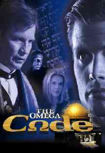
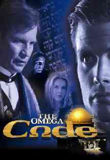

|  |
|
$40 million dollar
copyright infringement lawsuit filed against Trinity Broadcasting
by
Sylvia Flenner, author of The Omega Syndrome.
|  |
|
The part of Cassandra Barris, played by Catherine Oxenberg, is that of a network news reporter who secretly works for Stone Alexander. (It's not a secret to those who happen to notice an Alexander Network TV van in the first few minutes of the film.) Michael Ironside plays Stone Alexander's 2nd in command and hitman, Dominic, a former Catholic priest who feels threatened by the hiring of Dr. Gillen Lane as the new "prophet" of Stone Alexander. Dominic ultimately delivers the fatal "head wound" to his "antichrist" boss by accident, while trying to off Dr. Lane, who had just discovered the stolen Bible codes. This briefly allows Dominic to assume control of the organization, until Stone Alexander (the Antichrist) is miraculously resurrected from the dead, and indwelt by Satan himself.
The release of a movie like this from a well known television ministry has to prompt the question, how faithful is it to the Bible? Does it, in principle at least, accurately portray events that the word of God predicts, even if fictionalized to some degree? Supposedly, prophecy "expert" and author Hal Lindsey has insured the fidelity of the prophetic portion of the film with the scriptures, although he is the one and only Bible authority credited as a consultant to the film.
Where's the beef?
Here is an example of what was claimed for The Omega Code before it opened to the public:
... "there’s enough gospel in this movie that if you bring an unsaved loved one, it really is a powerful witnessing tool to opening up questions about the End Time, about Revelation, and that’s what we’re hoping Christians will do. It’s easy, as a Christian -- you can get a neighbor or unsaved person into a theater; they may never darken the door of a church, but you can get them into a movie theater. We’re hoping that Christians will use this as a witnessing tool." -- Quote of Paul F. Crouch Jr. in an interview with Pat Robertson on the 700 Club. Although promoted as a tool for witnessing the Gospel, there is very little religion of any kind in this film, the name of Jesus being mentioned in a positive way only once, when Dr. Lane, a self-described unbeliever, prays very briefly (God, Jesus save me!) in a moment of desperation and apparent danger. If Dr. Lane is converted, it is not developed any further in the story. Nowhere in the film is the Gospel (salvation through faith in Jesus Christ) explained, and neither is there a character that can be described throughout the film as a true Christian. Scripture is quoted or alluded to only a few times, but not in any way that explains the Gospel, and no specific references are given, so when it is quoted, those not familiar with the Bible will probably not know it, much less the chapter and verse being quoted. In fact, it would be difficult to produce a more secularized (non-religious) movie about Bible prophecy. As a result, non-Christians unfamiliar with Bible prophecy are not likely to understand how the movie relates to scripture, and many Christians may be similarly confused by what they see (or don't see) in the film.
I can't help but feel that some people that went out and bought hundreds of tickets in advance, to distribute for the purposes of evangelism, will feel they have been played for suckers, and their money totally wasted on a film essentially devoid of any Christian message. In fact, it is hard not to label this movie as nothing more than a crass attempt by TBN at gambling with donated money, hoping to hit the big time and rake in millions of dollars by luring their large television audience to attend and bring their friends, while making a secular guns and violence "thriller" that would still appeal to unbelievers. The PG-13 rating is merited because five people are shot to death, there are two terrorist bombings, two attempted assassinations of Dr. Lane (one a SWAT team break-in with machineguns blazing), two chase sequences with vehicles, an imminent nuclear military attack on Israel, and the destruction of Rome, which ends the film. Bottom line, you should see the movie before buying large blocks of tickets and promoting it to your unsaved friends. That way you will not feel "burned" by TBN, or anyone else who promoted the film as a way of witnessing for the Gospel.
In addition, the subject of the secret rapture, which is widely believed in Protestantism and is the topic of a recent book by Hal Lindsey, is curiously not even mentioned or depicted in The Omega Code. Also totally absent from the film are the number 666, the mark of the beast, the seal of God, miracles performed by the False Prophet (such as calling down fire from heaven), apostasy in the church, persecution of true Christians, and the prohibition of buying and selling imposed on the true people of God who refuse to take the mark of the beast.
With all that is missing from this film, you might ask, what IS in The Omega Code? Good question! Boil down what little there is and the major points of this movie are as follows:
- The Antichrist is a charismatic Hitler-like character that has not appeared yet, but will in the near future.
- The Antichrist will lead a revived Roman Empire and be involved in a 7 year peace treaty signed with Israel.
- The temple of Solomon will be rebuilt after the Arab Dome of the Rock on temple mount is destroyed. (In the movie, the Dome of the Rock is also rebuilt).
- The 70th week of Daniel (a seven year period) will begin with the signing of the seven year treaty between the Arabs and Israel, ending the war that began with the destruction of the Dome of the Rock and a Jewish synagogue.
- The Antichrist suffers a fatal head wound, from which he is miraculously resurrected, and the world wonders and follows him.
- Three and a half years into the treaty, the Antichrist is exposed for what he really is when he declares himself to be God on the temple mount in Jerusalem.
- Precisely seven years after the treaty signing, the millennial reign of Christ begins (this is where the movie ends, without even depicting the second coming of Jesus).
Futurism, Preterism, and Historicism.
The above scenario of The Omega Code can be classified under the category of Futurism, and is called such because it is based on a yet future fulfillment of the Antichrist of prophecy and the 70th week of Daniel (Dan 9:24-27). There are two other schools of prophecy that have to be considered. Preterism, which assumes that the Book of Revelation (and prophecy in general) was written for and to the first century church, and has little if any application to current or future events, the Antichrist most likely being Caesar Nero of pagan Rome. Then there is the school of Historicism, which applies Revelation to the period beginning in the first century but extending all the way to the second coming of Christ, during 1260 years of which, the Antichrist reigned over Europe from Rome.
During the Reformation, when scripture was exploding off the Protestant printing presses in the common tongue, instead of Latin, it became apparent to students of Bible prophecy that the Antichrist beast and apostate Mystery Babylon of the books of Daniel and Revelation was already on the scene, and had been for over a thousand years! Because of their Bible study, John Wycliff, John Hus, William Tyndale, Martin Luther, Philipp Melanchthon, John Calvin, John Knox, Huldreich Zwingli, and John Wesley all identified the Papacy of the Roman Catholic Church as the Antichrist power and apostate Mystery Babylon, as did many others. If the giants of the Reformation came to this conclusion, some even being burned at the stake for their belief, then when and how did Protestantism abandon the Historicist interpretation and adopt Futurism, where the Antichrist is some unknown unidentified figure off in the future?
Briefly, both Preterism and Futurism were concocted by Jesuit priests during the Reformation in order to take the heat off of the Catholic Church and counter the Historicist interpretation put forth by the heretical Protestants. Particularly in the last 100 years or so, the Catholic Futurist interpretation has gradually taken hold in Protestantism, and one of its main proponents for the last 20 years or so has been Hal Lindsey, who has appeared frequently on TBN, which airs his weekly prophecy program.
So the basic theme of TBN's movie The Omega Code represents an utter abandonment of the historical Protestant view of prophecy, and an endorsement of the Jesuit Futurist interpretation that was invented specifically by the Roman Catholic Church to counter the stinging accusations of the Reformers that the little horn of Daniel, the Antichrist, and the woman riding the beast in Revelation all referred to Popery and Roman Catholicism. Also of note, on Sunday, October 31st, Reformation day, an agreement was signed by that same Antichrist power with the vast majority of Lutherans, effectively ending the centuries old dispute over justification by faith!
Dan 8:25 And through his policy also he shall cause craft to prosper in his hand; and he shall magnify himself in his heart, and by peace shall destroy many: he shall also stand up against the Prince of princes; but he shall be broken without hand.
Interestingly enough, the False Prophet of Revelation can be demonstrated to be none other than apostate Protestantism based in the United States, that will fully support the Antichrist Catholic Church, even to the point of enforcing its mark of authority by force of law.
I extended an invitation for someone at Trinity Broadcasting Network to respond to the above review, and the following was graciously sent by Paul Crouch Jr. on October 25th, on behalf of TBN.
We never intended "The Omega Code" to be a literal interpretation of the book of Daniel or Revelation. To really bring the whole of the 70th week of Daniel to the screen would have cost 100 million dollars or more. (We wanted to originally do a movie like this, but was way out of our budget.) We simply took some of the highlights of prophecy and end times and put it into a dramatized story. This is simply a tool to open up discussion with unsaved people about the Bible and where we go when we die. It was not meant to open up philosophical diatribe between people who are supposedly on the same side! (It seems that believers are the first ones to shoot their wounded, and I don't know why that is?) Also, we wanted to represent that ultimately good wins over evil. None of us, if we're truly honest, know exactly how end times will play out. Our story, with the limited screen time and limited budget, represented one possibility. Yes, there were many things left out, (i.e., The Mark of the Beast, 666, The persecution of Christians, etc.) There have been other movies like that done, and we didn't even want to go there. At least not yet! This movie is a stepping stone for us, we had to start somewhere, and this is just a beginning. If Christians want better movies produced, then we must prove to Hollywood we'll support projects with a Christian message. You apparently didn't see much Christian message in this film, but we've been equally criticized for too much evangelism and the fact that it is anti-Catholic. Go figure? (With your obvious opinions on Catholics I thought you would have at least praised that part of the story!) This movie was not made to simply "preach to the choir", we do that enough. We wanted it to have some secular appeal and it has. Our numbers per screen have been fabulous!! The first weekend we were #1 and this past weekend we were #2. It's easy to sit back and criticize things we don't like, Christians tend to curse the darkness as opposed to lighting a candle. It's unbelievably difficult to bring even a simple movie like this to the screen. All I can say is "we tried", and this was our attempt to "light a candle." We wanted it to be better also, but our resources were limited.
The good news for all Christians is that they have spoken! Our box office returns are unbelievable! We at TBN are going to invade Hollywood and raise the standard for Christian films done now and in the future!
Hope this helps,
Paul Crouch Jr.
TBN VP of Production(You should see the review done by Focus on the Family
http://www.family.org/pplace/pi/films/a0008178.html)It is indeed unfortunate that TBN decided to make nothing more than an entertaining movie for the unchurched, and that it was never intended to accurately depict and teach end time events or present the Gospel message of salvation. As a result, The Omega Code, sadly, does not "light a candle" as claimed above. While it may well provoke discussions, that is likely because of the confusion it generates about prophecy among both believers and non-believers alike. Its evangelistic value is minimal, or even non-existent, compared to what it could have been.
I would disagree strongly on another point. We can indeed know for certain what events face us in the future, as that is the exact purpose of prophecy. For the Historical biblical Protestant truth about the Antichrist and False Prophet, see:
What Does The Word Vatican Mean?
Questions about the film that Paul Crouch Jr. has also answered:
Q. When does the dream sequence of Dr. Lane start?
A. The whole scene in the tunnel was a dream. He was found passed out in the street by Cassandra shortly after he fled from the Senator's house.Q. Why does Dr. Lane say "forgive me" as he enters the final code into the computer?
A. He's asking God to forgive him for what he's about to do.Q. The attack at the end is apparently on Israel or the Middle East, but the big explosion is in Rome. Why? Is that a result of entering the final code?
A. The final scene was not an explosion!! It was the light of God cleansing the world of evil. It blew the devil out of Stone and left Lane untouched. Had it been a bomb, everything would be blown to bits! The light then traveled around the earth to cleanse the rest of the world! This could also fall in line with the second coming of Christ, we leave this up to the viewer.Q. What is the purpose/meaning of the Catholic monstrance in the final moments of the movie (the gold sunburst looking thing used to display the wafer) which is in front of Dr. Lane?
A. It was something someone had given to my Dad. It normally sits in his office, and we thought it looked cool! Nothing more, nothing less. There is no hidden symbolism other than he is headquartered in Rome. Maybe Dominic gave it to him? Take your pick.Q. What's the significance of the visions/flashbacks of Dr. Lane?
A. He was seeing his mother, the ambulance she died in, kneeling at her grave, and him rejecting Christ by throwing away his cross.